The concept of wa, embodying harmony and serenity, is fundamental to Japanese culture.
This mindset's significance in Japanese society fosters a profound respect for nature, a minimalist aesthetic, and traditional values centered on maintaining peace.
A cultural phenomenon that encapsulates these principles is ambient music.
[P.01]
Ambient music focuses on creating soundscapes and atmosphere rather than traditional song structure. It's often used for meditation, relaxation, and setting a mood.
1980s
Japanese ambient music gained popularity due to its unique approach and usage.
[P.02]
Origins of Japanese ambient
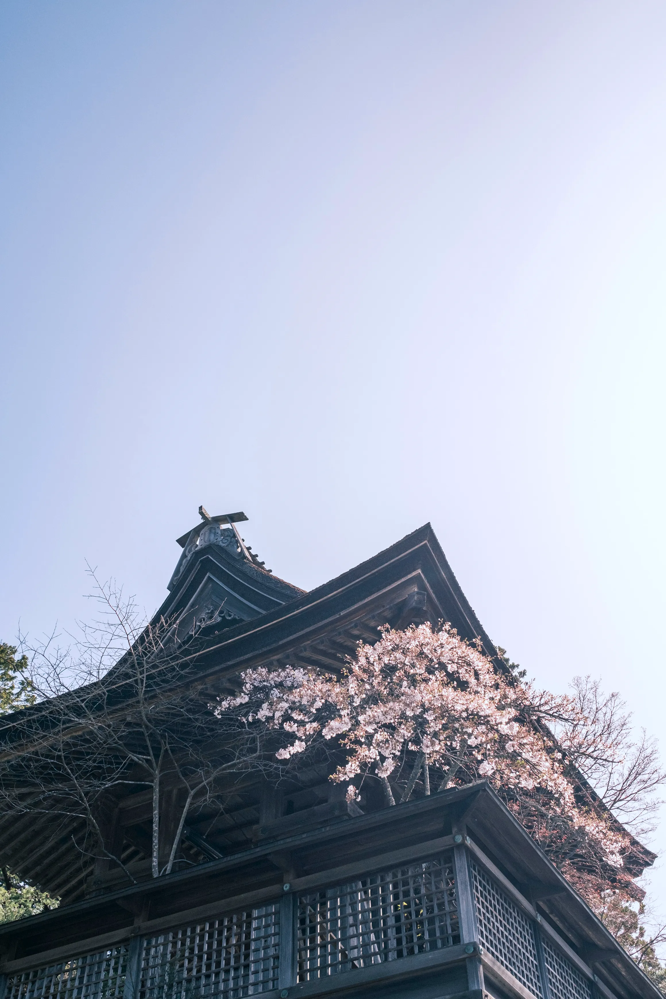
In the 1980s, a new wave of Japanese ambient musicians emerged, influenced by Western ideas and local cultural trends. Unlike the traditional approach, these musicians were funded by large corporations rather than record labels.
Their works were stored on corporate hard drives and became widely accessible only decades later thanks to YouTube and reissues.
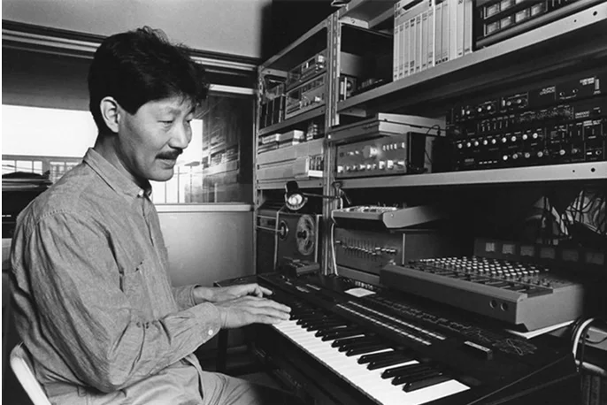
Hiroshi Yoshimura
[P.03]
[空]
Economic boom and new sounds
In the 1980s, Japan experienced an economic boom known as the "economic miracle." During this period, the economy shifted from exports to the domestic market, and cities like Tokyo and Osaka developed rapidly.
Ambient music was used as a means for relaxation and recovery in the bustling metropolis.
Brian Eno's "Music for Airports" significantly influenced the Japanese minimalist scene, offering a musical escape from urban life.
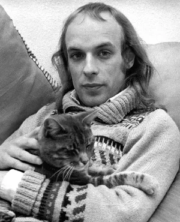
Brian Eno
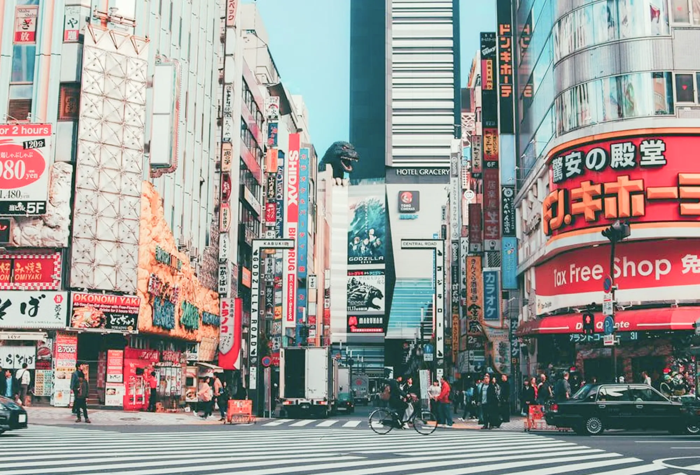
[P.04]
How Companies Supported the Arts
[喧噪]
To support the development of the domestic market, the Japanese government offered large tax breaks for creative investments.
As a result, many companies began funding albums for their commercials, private buildings, and even product packaging.
Companies like Muji, Seiko, and Honda provided musicians with complete creative freedom and access to cutting-edge equipment.
This created a renaissance-like environment of patronage, but with corporations instead of kings.
[空寂]
For instance
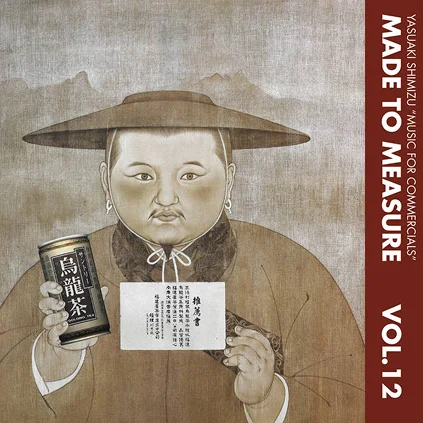
Yasuaki Shimizu music for commercials, 1987
Music for commercials for companies like Seiko, Sharp and Honda
[間]
or
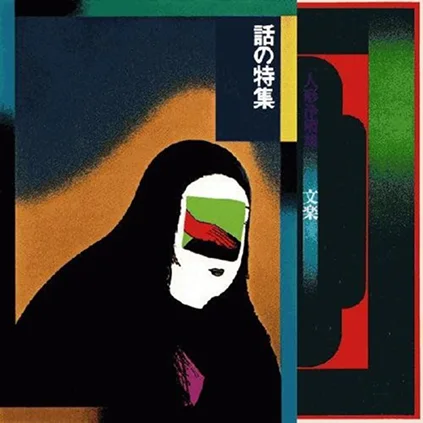
Watering a flower by Haruomi Hosono, 1984
This unique work was commissioned by the Japanese retail company Muji. Hosono, a pioneer in electronic and ambient music, crafted this album specifically to be played in Muji stores, creating a serene and atmospheric shopping experience.
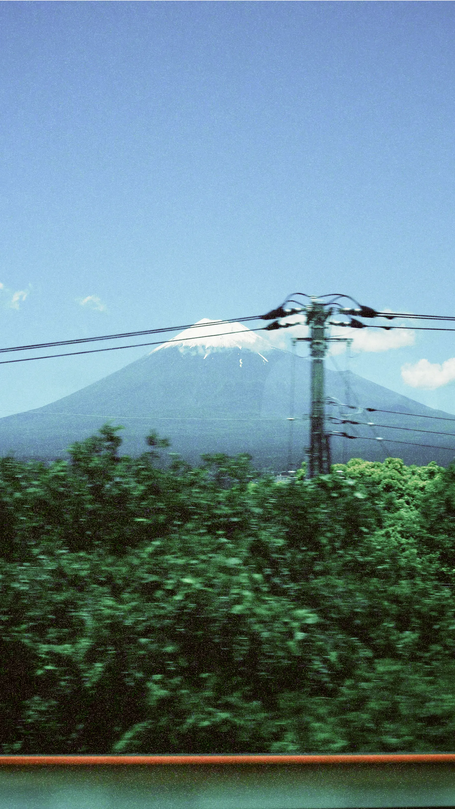
[P.05]
Legends
Names & albums
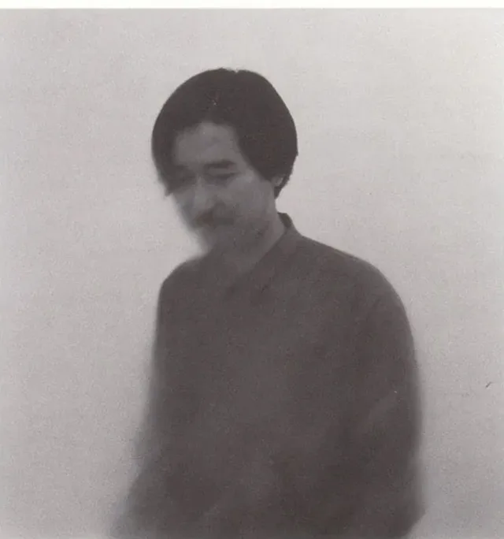
Yoshio Ojima
Ojima is recognized for his ability to create immersive soundscapes that reflect the architecture they accompany, offering listeners a unique auditory experience
Composed "Music for Spirals" in 1988 for the Spiral building in Tokyo
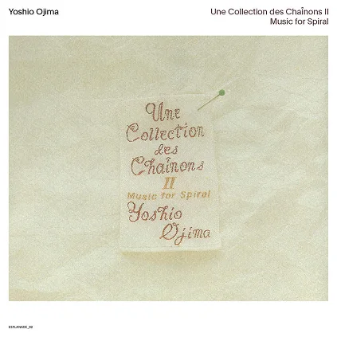
尾島 由郎
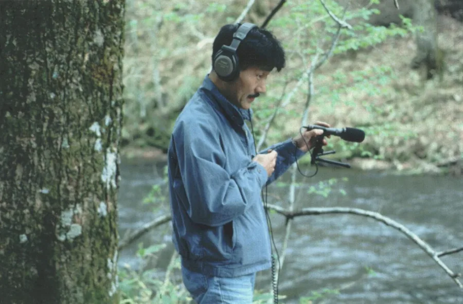
Hiroshi Yoshimura
His music, characterized by its meditative quality and simplicity, became a symbol of tranquility in urban life
Released "Soundscape 1: Surround" in 1986, funded by Misawa Home Corporation, and "Green," made entirely on a Yamaha DX7
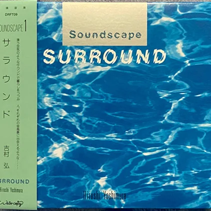
吉村弘
Joe Hisaishi
His works are notable for their emotional depth, merging traditional Japanese music with ambient and orchestral sounds
Known for Ghibli soundtracks, experimented with ambient music, featured in "Kankyo Ongaku"
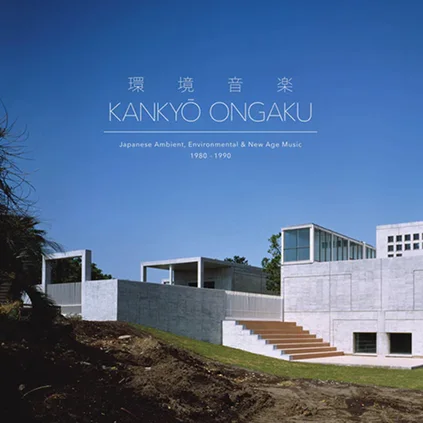
久石 譲
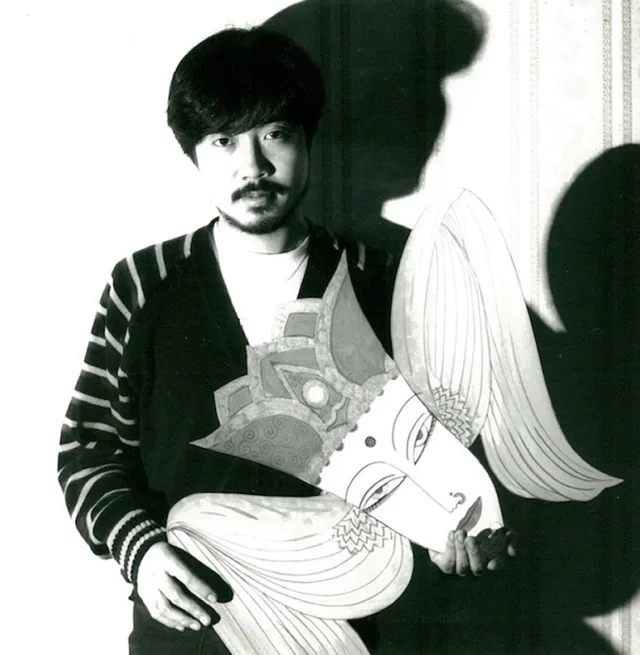
Yasuaki Shimizu
Known for his experimental approach, Shimizu fused ambient sounds with jazz influences, creating truly avant-garde compositions
Created "Music for Commercials," funded by Honda, Seiko, and Sharp
清水靖晃
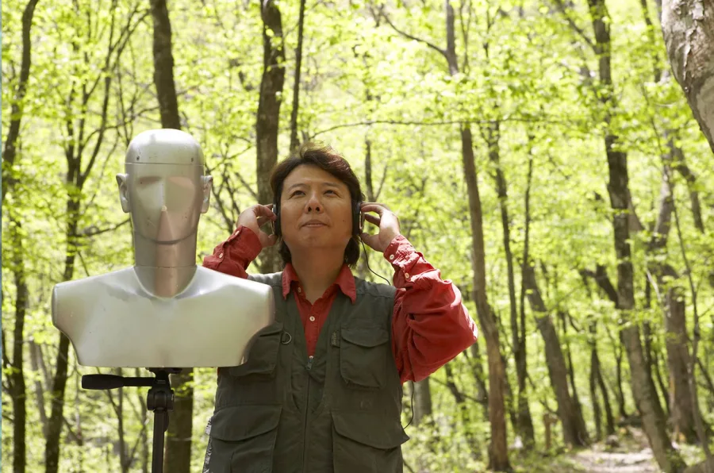
Takashi Kokubo
Kokubo became known for his ability to blend natural sounds with synthesized elements, crafting soundscapes that immerse listeners in a world of nature and tranquility.
Released "Wind Oasis" in 1993, an album created for Sanyo air conditioners
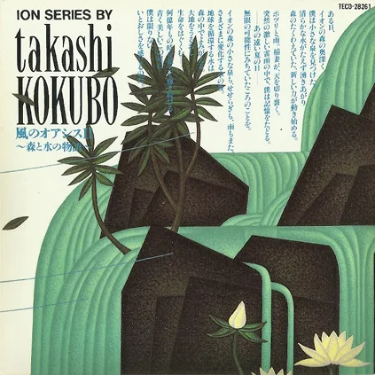
小久保隆
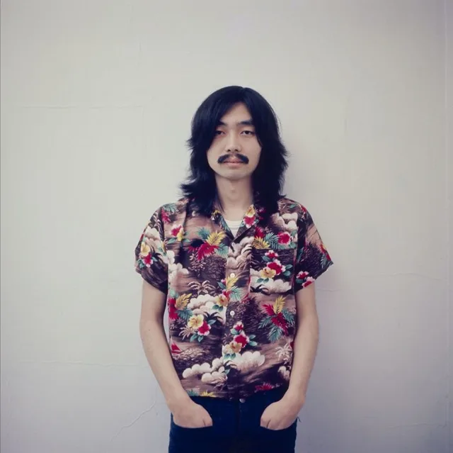
Haruomi Hosono
One of the pioneers of Japanese ambient, Hosono's work is known for its delicate textures and calmness, providing a perfect backdrop for Muji's minimalist aesthetic
Released "Watering a Flower" in 1984, funded by Muji
細野 晴臣
Japanese AmbientMusic inside the silence1980s
静
Commercial musicArtistsNew waveHeritageBack to top ↑
Personal concept made for my portfolio. Not affiliated with the artists or their labels. Photos, names and album art belong to their owners.